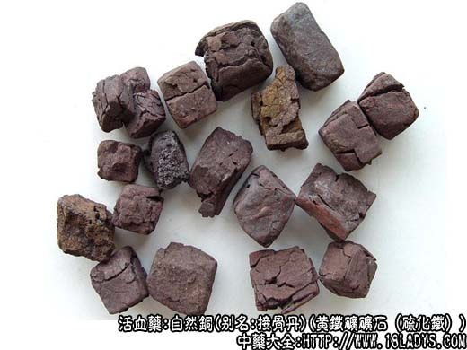

自然铜为少常用药。始载《开宝本草》。
别名：接骨丹（河北）。
来源：自然铜为黄铁矿矿石（硫化铁）。
产地：四川、山东、湖南、湖北、东北等地，在我国分布较广。
性状鉴别：自然铜多呈立方形晶体，块大小不一，小块数毫米，大块2厘米作用。表面平坦，青黄色，有光泽，形似青铜块（因晶体块自然生成故名自然铜）。有时表面呈棕褐色，无光泽，系受氧化所致，变为褐铁矿。质坚重，但易砸碎，断面不平坦，青黄色，有光泽气味均无。
以晶体呈方块形，颜色黄亮，不含岩石杂质者为佳。
主要成分：含硫化铁。
功效与作用：散血止痛，促进骨折愈合。
炮制：煅后醋淬。
性味：辛、平。
归经：入肝经。
功能：散瘀止痛，续筋接骨。
主治：跌打损伤，筋伤骨折，瘀血作痛。
临床应用：凡跌打损伤，尤其骨折，患处有肿痛，均可用自然铜，常配乳香、没药、续断、骨碎补等，方如新伤续骨汤。内服或外洗均可。
使用注意：自然铜不宜多服；阴虚有热者忌服。
用量：3～9g。
处方举例：新伤续骨汤：自然铜（醋煅）12g，乳香3g，没药3g，续断9g，骨碎补12g，归尾12g，土鳖虫9g，丹参6g，泽兰6g，延胡索4.5g，桑枝12g，桃仁3g，水煎服，适用于新伤骨折。
注：云南产品多数为褐铁矿石，内外均呈褐色，无光泽。同等药用。
自然铜不溶于稀盐酸，难溶于硝酸，投入火中燃烧产生浅蓝色火焰。